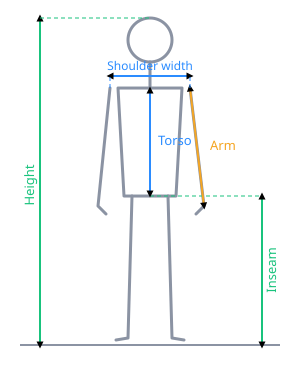
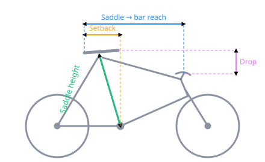

📏 How to measure
Body measurements

- Inseam — Barefoot, feet ~15 cm apart, back to a wall. Pull a book up firmly into your crotch (spine level) and measure floor to the top of the book.
- Height — Barefoot against the wall, floor to the top of your head.
- Torso — From the sternal notch (the dip at the base of your throat) straight down to the top of your inseam.
- Arm — From the bony tip of the shoulder (acromion) to the middle of your closed fist.
- Shoulder width — Across your back, bony point to bony point of both shoulders.
- Flexibility — Honest call on how easily you fold forward; it nudges the recommended bar drop.
Bike measurements (only needed for the optional comparison)

- Saddle height — Along the seat tube, from the centre of the bottom bracket (crank axle) to the top of the saddle.
- Saddle setback — Drop a plumb line from the saddle nose; measure the horizontal distance back to the bottom bracket.
- Saddle-to-bar drop — Vertical height difference between the top of the saddle and the top of the handlebar (a level helps).
- Saddle-to-bar reach — Horizontal distance from the saddle nose to the centre of the handlebar.
- Crank length — Usually printed on the back of the crank arm (e.g. 170).
Everything is in centimetres except crank length (mm). A tape measure, a book and a wall are all you need.
Your measurements
Enter at least your inseam. The more you add, the more the calculator can recommend.
My current bike setup (optional)
Add what you can measure and we'll show how far off each is and which way to move.
Saved sessions
How to get a good fit reading
- Mount your bike on a trainer and place the camera directly to the side, about 2–3 m away, at roughly hip height.
- Make sure your whole body — ear to foot — stays in frame.
- Pick your discipline, tap Start camera, then Record and pedal at a steady cadence for 15 seconds.
- Review the measured joint angles and the fit recommendations, then save the session to compare changes over time.
What we measure
Knee flexion at the bottom of the stroke (saddle height), hip and torso angles (front-end height & reach), and elbow/shoulder angles (reach), compared against target ranges for your discipline.
⚠️ VeloFit gives general guidance based on camera angle estimates. It is not a substitute for a professional bike fit or medical advice. Make adjustments in small steps and stop if anything causes pain. All data stays in your browser.